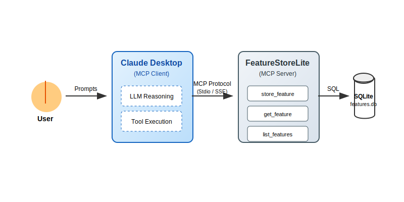
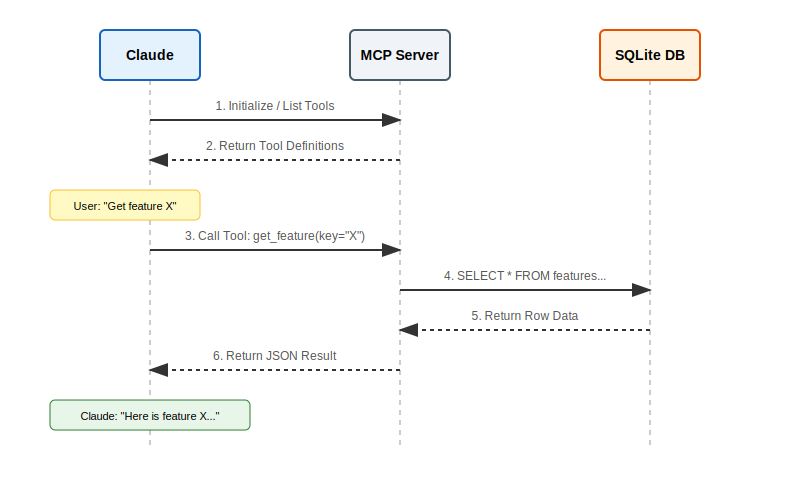

Building a Custom FeatureStoreLite MCP Server Using uv
A step-by-step guide that shows how to create your own lightweight feature store MCP server from scratch using FastMCP, run it through uv, and integrate it with Claude Desktop.
1. Introduction
The Model Context Protocol (MCP) is an open standard that enables AI assistants (like Claude) to connect to external data and tools. Instead of building custom integrations for every tool, MCP provides a universal language for AI models to interact with your world.
In this tutorial, we will build a FeatureStoreLite MCP server. This server will act as a bridge between an LLM and a feature store (a database of precomputed ML features), allowing the LLM to query and retrieve feature vectors for users, products, or documents.
Why build this?
Imagine you are an ML engineer debugging a pipeline. Instead of writing SQL queries or Python scripts to check feature values, you can simply ask Claude: "What is the feature vector for user_123?" or "Show me the metadata for product_abc".
Why use uv?
We will use uv, an extremely fast Python package installer and project manager. It simplifies dependency management and makes running our server reproducible and fast.
Architecture Overview
Here is how the components interact:

- User: Asks a question in natural language.
- Claude Desktop: The MCP Client that interprets the question and decides which tool to call.
- MCP Server: Our Python application running
FastMCPthat exposes tools (get_feature,store_feature). - SQLite: The backing storage for our feature vectors.
2. Setup and Installation
2.1. Install uv
If you haven't installed uv yet, get it now. It's a game-changer for Python development.
# macOS/Linux
curl -LsSf https://astral.sh/uv/install.sh | sh
# Or via Homebrew
brew install uv
2.2. Initialize the Project
Create a new directory and initialize a Python project. uv init creates a pyproject.toml for you.
# Create project directory
mkdir mcp-featurestore
cd mcp-featurestore
# Initialize Python project
uv init
# Add the MCP SDK with CLI tools
uv add "mcp[cli]"
3. Building the Server
We will split our application into two files:
database.py: Handles SQLite operations.featurestore_server.py: The MCP server definition.
3.1. The Database Layer (database.py)
This module manages the SQLite connection and provides helper functions. We'll also seed it with some dummy data so we have something to query.
Create database.py:
# database.py
import json
import os
import sqlite3
def get_db_path() -> str:
"""Get the database path - always in the script's directory"""
script_dir = os.path.dirname(os.path.abspath(__file__))
return os.path.join(script_dir, "features.db")
def init_db() -> None:
"""Initialize the feature store database with table and sample data"""
conn = sqlite3.connect(get_db_path())
conn.execute("""
CREATE TABLE IF NOT EXISTS features (
key TEXT PRIMARY KEY,
vector TEXT NOT NULL,
metadata TEXT,
created_at TIMESTAMP DEFAULT CURRENT_TIMESTAMP
)
""")
# Sample data for experimentation
example_features = [
(
"user_123",
"[0.1, 0.2, -0.5, 0.8, 0.3, -0.1, 0.9, -0.4]",
json.dumps({"type": "user", "id": 123, "segment": "premium"}),
),
(
"product_abc",
"[0.7, -0.3, 0.4, 0.1, -0.8, 0.6, 0.2, -0.5]",
json.dumps({"type": "product", "id": "abc", "category": "electronics"}),
),
]
# Insert if not exists
for key, vector, metadata in example_features:
try:
conn.execute(
"INSERT INTO features (key, vector, metadata) VALUES (?, ?, ?)",
(key, vector, metadata),
)
except sqlite3.IntegrityError:
pass # Already exists
conn.commit()
conn.close()
def get_db_connection() -> sqlite3.Connection:
"""Get a database connection"""
return sqlite3.connect(get_db_path())
if __name__ == "__main__":
init_db()
print("✅ Database initialized successfully!")
Initialize the database:
uv run python database.py
3.2. The MCP Server (featurestore_server.py)
Now for the exciting part. We use FastMCP to define our server. It uses decorators to turn standard Python functions into MCP Tools and Resources.
Create featurestore_server.py:
# featurestore_server.py
import json
from mcp.server.fastmcp import FastMCP
from database import get_db_connection, init_db
# Initialize the MCP Server
mcp = FastMCP("FeatureStoreLite")
# Ensure DB is ready when server starts
init_db()
@mcp.resource("schema://main")
def get_schema() -> str:
"""
Resource: Provide the database schema.
Resources are passive data that LLMs can read like files.
"""
conn = get_db_connection()
try:
schema = conn.execute(
"SELECT sql FROM sqlite_master WHERE type='table'"
).fetchall()
return "\n".join(sql[0] for sql in schema if sql[0]) or "No tables found."
finally:
conn.close()
@mcp.tool()
def store_feature(key: str, vector: str, metadata: str | None = None) -> str:
"""
Tool: Store a feature vector.
Tools are executable functions that LLMs can call to perform actions.
"""
conn = get_db_connection()
try:
# Validate that vector is valid JSON
json.loads(vector)
conn.execute(
"INSERT OR REPLACE INTO features (key, vector, metadata) VALUES (?, ?, ?)",
(key, vector, metadata),
)
conn.commit()
return f"Successfully stored feature '{key}'"
except json.JSONDecodeError:
return "Error: Vector must be a valid JSON array string (e.g., '[0.1, 0.2]')"
except Exception as e:
return f"Error: {str(e)}"
finally:
conn.close()
@mcp.tool()
def get_feature(key: str) -> str:
"""
Tool: Retrieve a feature vector by key.
"""
conn = get_db_connection()
try:
row = conn.execute(
"SELECT vector, metadata FROM features WHERE key = ?", (key,)
).fetchone()
if row:
return json.dumps(
{
"key": key,
"vector": json.loads(row[0]),
"metadata": json.loads(row[1]) if row[1] else None,
},
indent=2,
)
return f"Feature '{key}' not found."
finally:
conn.close()
@mcp.tool()
def list_features() -> str:
"""
Tool: List all available feature keys.
"""
conn = get_db_connection()
try:
rows = conn.execute("SELECT key FROM features").fetchall()
return json.dumps([row[0] for row in rows])
finally:
conn.close()
if __name__ == "__main__":
mcp.run()
4. Testing with MCP Inspector
Before connecting to Claude, use the MCP Inspector to verify your server works. This web interface lets you test tools and view resources.
uv run mcp dev featurestore_server.py
This command starts the server and opens the Inspector in your browser (usually http://localhost:5173 or similar).

Try calling get_feature with key="user_123" in the Inspector to confirm it returns the JSON data.
5. Connecting to Claude Desktop
Now let's connect our server to Claude Desktop so we can talk to it.
5.1. Configure Claude
Edit your Claude Desktop configuration file:
- macOS:
~/Library/Application Support/Claude/claude_desktop_config.json - Windows:
%APPDATA%/Claude/claude_desktop_config.json
Add your server to the mcpServers object:
{
"mcpServers": {
"featurestore": {
"command": "uv",
"args": [
"run",
"--with",
"mcp[cli]",
"mcp",
"run",
"/ABSOLUTE/PATH/TO/mcp-featurestore/featurestore_server.py"
]
}
}
}
⚠️ Important: You must use the absolute path to your
featurestore_server.pyfile.
5.2. How the Interaction Works
When you ask Claude a question, the following workflow occurs:

- Claude sees the available tools (
get_feature,list_features, etc.). - It determines that your question requires data from the feature store.
- It constructs a tool call and sends it to your server.
- Your server executes the Python function and returns the result.
- Claude uses that result to answer your question.
5.3. Example Queries
Restart Claude Desktop and try these prompts:
-
"List all available features."

-
"Get the feature vector for user_123."

-
"Store a new feature for 'new_item' with vector [0.5, 0.5] and metadata {'type': 'test'}."
6. Troubleshooting
If things aren't working, check these common issues:
-
"Server connection failed":
- Check the logs:
tail -f ~/Library/Logs/Claude/mcp.log(macOS). - Ensure you used the absolute path in the config file.
- Verify
uvis in your system PATH or use the full path to theuvbinary.
- Check the logs:
-
"Tool execution error":
- Use the Inspector (
uv run mcp dev ...) to debug the specific tool. - Check if your
database.pyis creating thefeatures.dbfile in the correct location.
- Use the Inspector (
7. Conclusion
You've just built a functional MCP server that extends Claude's capabilities! This pattern—using FastMCP for the server and uv for execution—is a powerful way to build robust AI tools quickly.